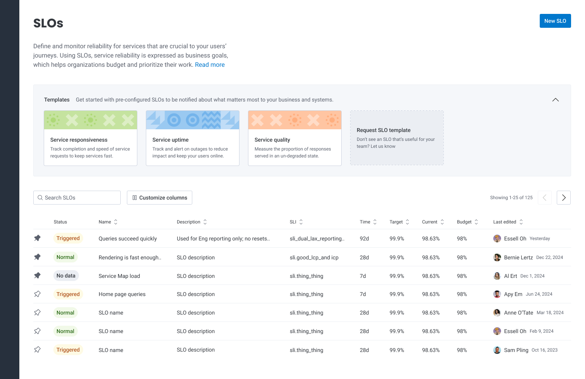
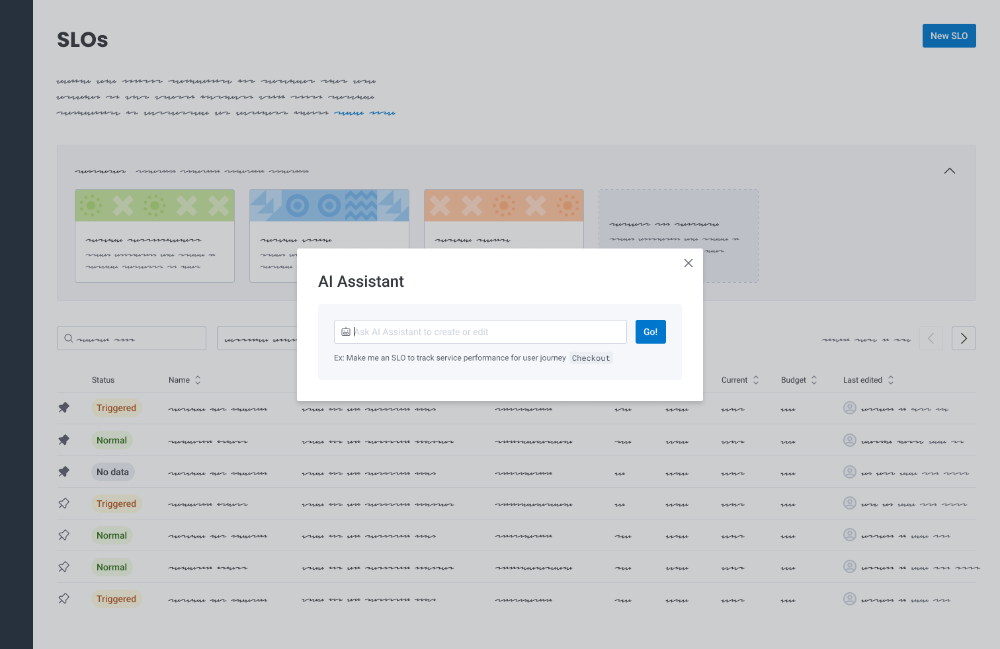
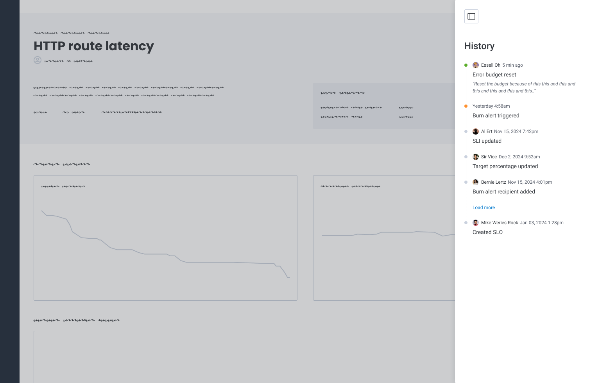
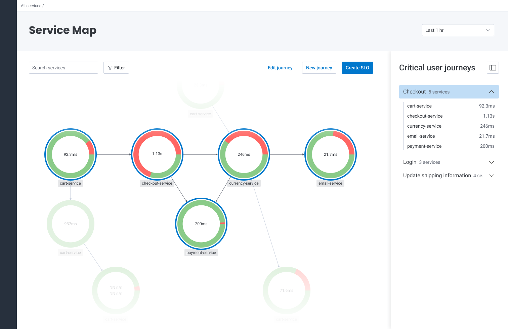

Case study UI UX
The path to SLO adoption begins with SLI creation
As a member of Honeycomb's Signals Team, I leveraged user research to identify bottlenecks in the Service Level Objective creation workflow, and shipped four improvements to increase effiency and adoption.
Honeycomb's software is property of Hound Technology, Inc. This case study is not sponsored by Honeycomb.

Honeycomb's SLO list view
What are SLOs anyway?
Honeycomb's definitive stance on Service Level Objectives (SLOs) is they're an essential complement to traditional alerts; a keystone of great observability with the power to align software companies around the business impact of their application's UX.
With an SLO, stakeholders come together to define a critical user journey (i.e. a retail application might choose a 'checkout' flow), identify the associated services that journey touches, and agree upon the target reliability for those services. For example: "Over a period of 28 days, 98% of users can purchase an item without errors." For this SLO, the error budget, or tolerance for failures, is 2%. When the budget burns at a rate that would deplete it before the time period, teams are notified with Burn Rate Alerts. After being notified, SREs are empowered to troubleshoot the problem, reallocate resources, halt deployments, and/or begin a discussion about service reliability expectations.
Pinpointing friction
Once configured, customers really see the value of SLOs. Our research revealed that getting to that value was the issue. During discovery, we gathered feedback from users as well as Customer Success and Sales Teams, collected usage data from Honeycomb and Amplitude, and observed user behavior in Fullstory sessions. We learned that users found SLOs difficult to configure, which meant teams were missing out on their magic. Armed with boatloads of qualitative and quantitative insights, we synthesized and grouped the friction by theme:
- Service Level Indicators (SLIs), a required component of an SLO, were challenging to create and manage. SLIs are created using custom fields (which Honeycomb calls Derived Columns). Users often struggle to write the Derived Column function because of the syntax. Secondly, Derived Columns could only be accessed via Data Settings, several pages removed from the SLO creation flow.
- SLOs require organizational alignment when deciding which user journeys are business-critical and what an acceptable reliability should look like. We heard that cross-team consensus was arduous, time consuming, and contentious at times.
- Many customers are more familiar with the concept of traditional alerts and therefore tend to reach for Triggers, ignoring our SLOs feature altogether.
- Set up and iteration can be laborious and feel like guesswork. Even teams that were highly motivated to get started with SLOs were deterred by the configuration cost.
- Users expressed feeling anxiety during SLO configuration because they're worried the Burn Alert notifications will ping team members unnecessarily.

Journey mapping exercise to align the team around what the current SLO creation process looked like and where pain points resided
Focusing on SLIs
A Service Level Indicator (SLI) is a foundational element of an SLO; the mechanism by which success or failure is evaluated. Expressed as a formula, an SLI in Honeycomb looks like: Successful events ÷ Total (qualified) events × 100.
Our discovery showed that SLIs were a major deterrent for users to get started with SLOs, and following an impact/effort exercise to assess each friction theme, we felt confident that making them easier to understand, create, and manage would move the needle on SLO adoption.
Improvements we shipped
Our ideation centered around the classic UX principle, "don't make me think" (coined by Steve Krug). While this tenet applies to all of our work, it was especially important for SLIs given their complicated nature and current state in the product. We sought to reduce the amount of overhead required to create an SLI, which we hypothesized would result in increased SLO conversion.
Over the course of H2 2024, our team conceived and shipped several MVPs to General Availability that directly addressed SLI friction, the results of which improved SLI creation and SLO adoption:
- SLI templates. Nothing is more intimidating than a blank canvas. To alleviate the pressure of creating an SLI from scratch, we introduced templates for the most common indicators: Latency for span name, Latency for duration, and Latency and availability for endpoint. Each template includes a brief description, visible in a tool tip when hovering over the button. Selecting a template pre-populates the function editor, which provides a foundation for the user to build upon. Honeycomb Changelog
- Inline creation and editing. Because SLIs use Derived Columns, users previously had to create or edit their SLIs within Data Settings, where Derived Columns live. This meant users had to leave the context of the SLO, which resulted in lost context, wasted time, and overall frustration. We brought SLI creation and edit capabilities to a modal window that sits above the SLO creation page, so that users never have to leave their flow. Honeycomb Changelog
- New 'Build Query' creation mode. We saw users continually start their SLI creation workflow by querying their application to understand service performance. Once they identified the current state of reliability for those services — which can take several iterations — all of that work was lost when the user navigated away from the Query Builder to translate their query to an SLI. To address this, we introduced a second SLI creation method, Build Query Mode, within the SLO creation page. Using this new mode, users could create their SLI using the Query Builder language and interface they were already familiar with. If a user needs to refine their expression in the code editor, switching from Build Query mode to Write Formula mode translates their SLI to code, where it can be refined. Honeycomb Changelog
- Autoformat SLI. For users who author their function using the code editor, we added a "Format" button that automatically cleans up an expression by adding line breaks and block indentation, making it easier to read. Honeycomb Changelog
To alleviate the pressure of creating an SLI from scratch, we introduced templates for the most common indicators.
Using the new Build Query mode, users can create their SLI using the Query Builder language and interface they're already familiar with.
We added a "Format" button that automatically cleans up an expression by adding line breaks and block indentation.

We brought SLI creation and edit capabilities to a modal window that sits above the SLO creation page, so that users never have to leave their flow.
Outcomes and reception
We saw some fascinating results over the next several months:
- SLI conversion for new Enterprise users increased 17% in the five months after release compared to the previous time period.
- SLO conversion for new Enterprise users increased 18% in the five months after release compared to the previous time period.
- In the five month period after release, 56% of SLIs created by new Pro users were made using our new Build Query mode.
- In the final quarter of 2024, 41% of SLI template clicks were Latency and Availability Endpoint, 35% were Latency Duration, and 24% were Latency Span Name.
The future of Honeycomb SLOs (maybe)
What might Honeycomb SLOs look like in the future? The team continues to think about how we can make SLO creation simpler and recognizes opportunities for additional enhancements:
Features and images are conceptual and exploratory, for demonstration purposes only.- SLO templates. Taking SLI templates a step further, what if users could create an SLO for common use cases with a single click? This would significantly reduce time and effort by pre-populating the target and time period, and automatically generating an SLI behind the scenes.
- Recommendations. Sometimes it can be difficult to prioritize user journeys because everything is important. Could we reduce cognitive load and provide focus by recommending user journeys that have poor service performance? Or suggest a target percentage or time period for an SLO based on industry benchmarks or historical data?
- More intuitive entry point. Could our Service Map serve as the starting point for SLO creation? Here, users can quickly understand service dependencies and select or tag a group of them based on user journeys.
- Tailored experience based on user's responsibilities. If we capture a new user's title during their onboarding flow, could we serve up a default view of SLOs that resonates with their specific responsibilites and needs? For example, an SRE would likely want to monitor and respond, whereas an Engineering Manager might be more interested in a reporting view.
- Better onboarding experience. We know SLOs are difficult to grasp for teams who are new to them. There is likely something we can do to better onboard them into the feature; whether it's a video walkthrough or a creation wizard.
- Artificial Intelligence. While AI is quite the buzzword lately, we do see the potential value in applying Large Language Models to SLO creation to make them easier to create. Imagine a world where a user can simply type: "I want to monitor X user journey to ensure that X" and Honeycomb selects the services, defines success, and sets up burn alerts automatically.
- Historical compliance. There are specific user personas who need to visualize service performance over time in order to: evaluate past decisions, prioritize future work, allocate resources accordingly, and justify investment in our tool.
- SLO history. Oftentimes, users ask questions like: Who reset an error budget and why? When was the SLI tweaked? When was the target percentage updated and what was the previous value? To increase transparency and facilitate collaboration, could we bring historical SLO context into the details page?

There may be value for users to create an SLO by simply summarizing what they want.

SLO history to gather context about error budget resets, SLI updates, and target tweaks.

Critical User Journey and SLO creation from the Service Map, where users gather context about service health and interdependencies.